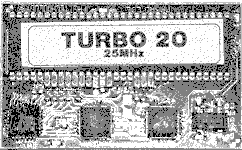
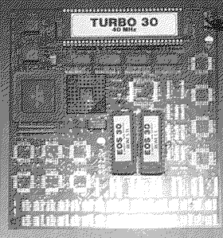
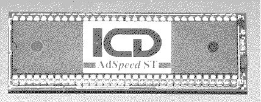

Previous
Next
TOC
Die Turbo 20 von Makro C.D.E (Fast Technology)

CPU Takt 8 oder 20 oder 25MHz (je nach Version der Turbo 20)
Cachegröße 32 Kilobyte
Soundchip (Pin 14) schaltet den Cache ein oder aus (Drahtverbindung)
oder über einen prellfreien Schalter
Die Turbo 30 von Makro C.D.E (Fast Technology)

CPU Takt 40MHz (MC68EC030 CPU also ohne PMMU)
Bei problemen kann man auf die onboard MC68000 zurückschalten
FPU (MC68882) kann nachgerüstet werden
Der ICD AdSpeed ST

weiterblättern
Kapitel Die Beschleunigerboards, Seite 2